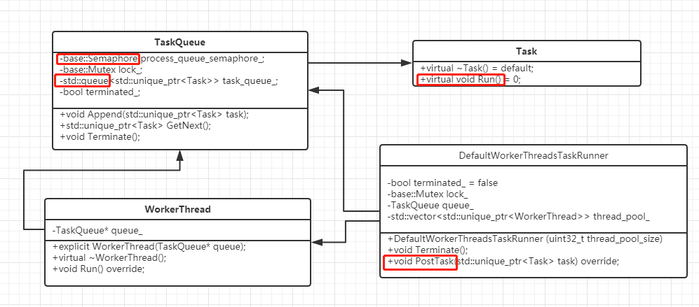

V8_线程模型（一）
DefaultWorkerThreadsTaskRunner

1.常规的用队列+信号量，来构成线程池。 对外走统一的接口，postTask.
2.最终把能力在 Platform层对外暴露
void DefaultPlatform::CallOnWorkerThread(std::unique_ptr<Task> task) {
EnsureBackgroundTaskRunnerInitialized();
worker_threads_task_runner_->PostTask(std::move(task));
}
std::shared_ptr<DefaultWorkerThreadsTaskRunner> worker_threads_task_runner_;
DefaultWorkerThreadsTaskRunner::DefaultWorkerThreadsTaskRunner(
uint32_t thread_pool_size) {
for (uint32_t i = 0; i < thread_pool_size; ++i) {
thread_pool_.push_back(base::make_unique<WorkerThread>(&queue_));
}
}

DefaultWorkerThreadsTaskRunner
{
// v8::TaskRunner implementation.
void PostTask(std::unique_ptr<Task> task) override;
private：
bool terminated_ = false;
base::Mutex lock_;
TaskQueue queue_;
std::vector<std::unique_ptr<WorkerThread>> thread_pool_;
}
--thread_pool_
--WorkerThread（base::Thread）
{
private：
TaskQueue* queue_;
}
--TaskQueue
{
base::Semaphore process_queue_semaphore_;
base::Mutex lock_;
std::queue<std::unique_ptr<Task>> task_queue_;
}
关注-退出时刻的逻辑：
1.加锁互斥调用，关闭新的任务加入。
void DefaultWorkerThreadsTaskRunner::PostTask(std::unique_ptr<Task> task) {
base::LockGuard<base::Mutex> guard(&lock_);
if (terminated_) return;
queue_.Append(std::move(task));
}
2.DefaultWorkerThreadsTaskRunner 基本所有的函数都加锁调用（除了构造函数）
void DefaultWorkerThreadsTaskRunner::Terminate() {
base::LockGuard<base::Mutex> guard(&lock_);
terminated_ = true;
queue_.Terminate();
// Clearing the thread pool lets all worker threads join.
thread_pool_.clear();
}
3.锁没有锁函数调用，都是对本象中元素进行处理，吐给外层。
std::unique_ptr<Task> TaskQueue::GetNext() {
for (;;) {
{
base::LockGuard<base::Mutex> guard(&lock_);
if (!task_queue_.empty()) {
std::unique_ptr<Task> result = std::move(task_queue_.front());
task_queue_.pop();
return result;
}
if (terminated_) {
process_queue_semaphore_.Signal();
return nullptr;
}
}
process_queue_semaphore_.Wait();
}
}
4.最终退出时，会把所有投递的Task干完。当没有任务，又置为结束时，会process_queue_semaphore_.Signal() 接力传递下去，然后本线程退出。
当DefaultWorkerThreadsTaskRunner::Terminate() 时，queue_.Terminate()，会给信号量+1，然后每个线程在退出时，会继续接力+1。